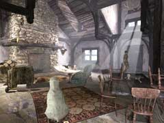
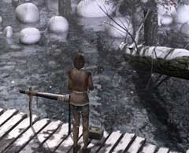
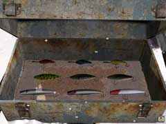

|

雪山を移動しているあなたは、山小屋へ到着しただろう。この山小屋を調査し終わったあなたが、外へ出ようとしたとき突然、熊が襲いかかってきた。 熊はなかなか立ち去ってくれないし、あなたは熊のいる方向に用事がある。 熊を追い払う前に、室内をよく調べてみよう。見落としている品があるかもしれない。また、熊の好物についての文献がかならず置いてあるはずだ。魚を入れる袋と、ロシアの工芸品である「マトリョーシカ」を見つけただろうか? 念のために言っておくが、見つけた斧で熊を倒そうなどという考えは起こさないことだ。

熊を追い払う手だてを見つけたら、早速魚を釣りに裏口へ出よう。釣り竿とルアーが置いてあるので、釣ることに関しては十分である。

それでは、あなたがつりたい魚はなにが好物だろうか? そして、その好物によく似たルアーはどれであろうか? また、釣り糸をたれる場所はどこか? 色々と考えなければならない。 また、釣った後の魚を入れる袋はちゃんと持ってきただろうか? 持っていない場合、ユーキーに食べられてしまうだろう。 |